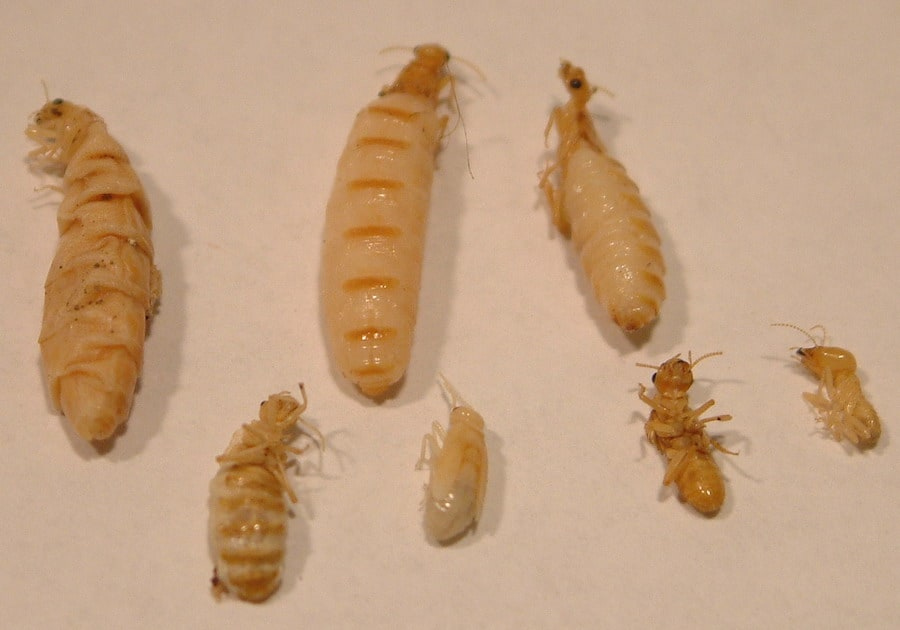
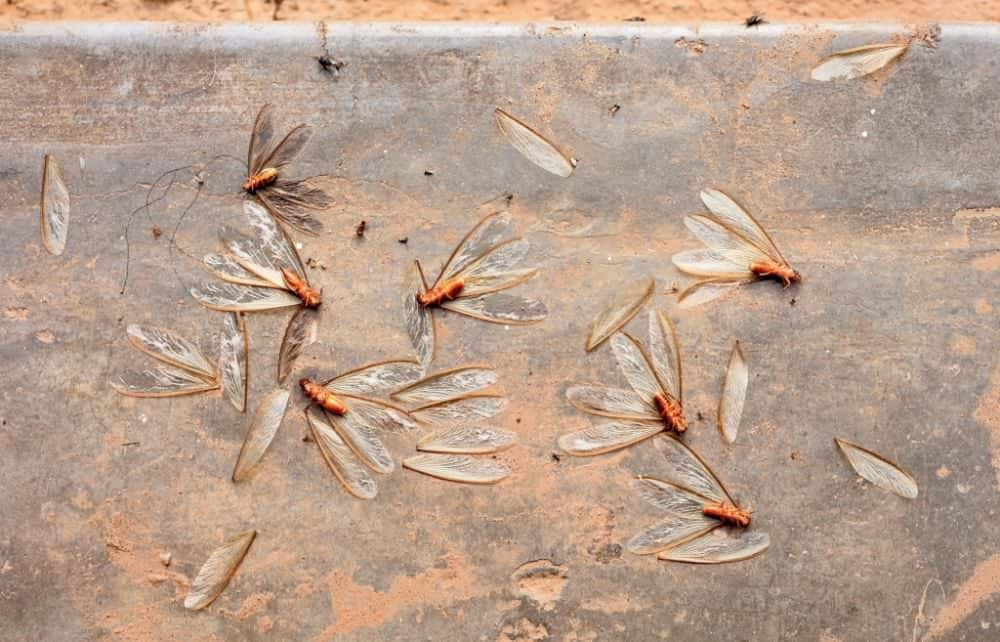
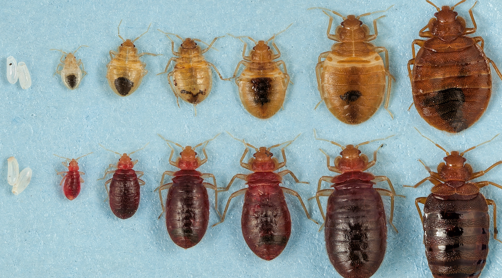
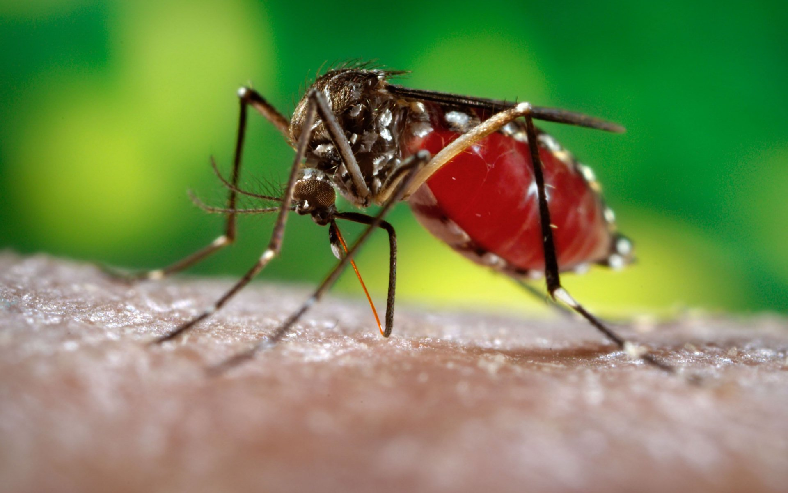

____________
Our Services
_______________
Residential
We provide complete pest control services for homes including treatment for termites, bed bugs, mosquitoes, and even moisture.

Termites
Every year, termites cause billions of dollars in property damage in millions of homes. Wilmington's subtropical climate creates warm, humid conditions that support termite activity throughout much of the year. Homes near the coast and in wooded neighborhoods face a higher risk, making ongoing termite prevention crucial. And because most homeowner's insurance rarely cover termite damage, we recommend investing in profressional termite control and preventative treatments. Our main preventative treatment, the non-oder, non-intrusive treatment, not only eliminates any existing termites but also prevents any future infestations.
If you're looking to buy a new home, our team also provides and is able to conduct a Wood-Destroying Insect Report (WDIR) to determine if a property has a termite problem. Even if your lendor does not require this report, we highly recommend that you ensure that your new home is termite-infested-free to bring added peace of mind to the home buying process.
Signs of a Termite Infestation
Termites are silent wood-destroyers, often eating away at a home's structure for months or even years before being detected. The humidity and dense wood landscaping, common in Wilmington, create and ideal environment for termites. Scheduling for regular inspections is key to spot issues early and prevent extensive damage that can occur quickly and quietly in this region's climate. Below are a few signs of possible termite-infestation:

- Mud tubes going up the foundation of a home
- Quiet clicking sounds in the walls
- Swarms of flying termites near the windows
- Discarded termite wings
- Piles of frass (termite droppings that look like wood shavings or coffee grounds)
- Hollow sounds when you knock on wood
- Difficulty opening or closing windows or doors
- Visible destruction to wood
Bed Bugs
Bed bugs can leave you feeling vulnerable in the place you're supposed to feel most secure – your home. When bed bugs make it into your home, professional intervention is crucial. As a fourth-generation, family owned and operated pest control company, we understand just how important it is to feel safe and comfortable at home. That's why we always go above and beyond to take care of your pest problems and help you regain control over your home. Our services are designed to eliminate bed bugs and prevent them from returning in the future.

How Bed Bugs Enter Homes
The arrival of bed bugs is seldom related to the cleanliness of a home. Bed bugs are not attracted to dirt or decay but are instead opportunistic travelers, often called “hitchhikers,” that hitch rides on luggage, clothing, used furniture, purses, and other personal belongings. If you ever find yourself in a place infested with bed bugs, such as hotels, offices, schools, or public transportation, you can unknowingly bring these pests into your home. This mode of travel allows bed bugs to effortlessly spread and establish new colonies in unsuspecting environments.
Signs of Bed Bug Infestations
Here are 5 warning signs of a bed bug infestation to look out for:
- Unexplained Bites: Often the first sign, these appear as small, red, itchy spots on your skin, usually on areas exposed while sleeping.
- Blood Stains: Tiny blood spots on your sheets or pillowcases, which occur when bed bugs are inadvertently crushed, are an indication of their presence.
- Dark or Rusty Spots: Check your mattresses, bedding, and nearby furniture for small, dark spots of bed bug excrement.
- Eggs and Shells: Tiny, pale yellow skins that nymphs shed as they grow larger might be visible upon close inspection.
- Live Bed Bugs: Although they are nocturnal and elusive, you might spot live bed bugs if the infestation is significant. They are small, brown, and oval-shaped insects.
Mosquitoes
All across North Carolina, each Spring and Summer mosquitoes emerge in full force, constantly irritating residents and leaving unbearably itchy bites all over your skin. Unfortunately, these pests are more than just a nuisance; they are known to carry and transmit harmful diseases to humans, making mosquito control very important. With 80+ years of experience in the pest control industry, we have the expertise and resources necessary to significantly reduce the mosquito populations on your property, helping you regain control over your yard and home.

When to Call for Mosquito Control?
While encountering a few mosquitoes during a summer evening is nothing unusual and generally not a cause for concern, a noticeable increase in their population around your property could indicate a more serious issue. Here are key signs that you may need professional mosquito control:
- Standing Water: Mosquitoes breed in standing water. If you have stagnant water sources that you cannot easily eliminate, such as ponds or pools, it might be best to schedule routine mosquito control in these areas.
- Frequent Mosquito Bites: If you or your family members are experiencing mosquito bites more often than usual, especially during the daytime, it could suggest an increase in mosquito activity around your home.
- Daytime Mosquito Activity: While mosquitoes are typically more active at dawn and dusk, increased activity during the day can indicate a larger, nearby breeding ground.
- Larvae: Finding mosquito larvae in standing water around your property is a clear indication of a mosquito breeding site on your premises.
_______________
Commercial Pest Control
Running a successful business in Wilmington means juggling many responsibilities, but dealing with a pest infestation shouldn't be one of them. In our coastal climate, pests like rodents, roaches, and termites thrive and can quickly threaten your sanitation scores, inventory, and hard-earned reputation. Whether you manage a restaurant on the riverfront or a warehouse, professional intervention is essential to maintain a safe, compliant environment for your customers and employees. Don't wait for an infestation to occur; call us today at (910) 586-3788 for service options.
Signs That Your Business Needs Intervention
Recognizing the early warning signs of a pest problem is crucial for commercial facilities to avoid significant financial loss and regulatory penalties. Pests are rarely just a nuisance in a business setting; they are a direct threat to health codes and brand integrity. Often, the visible signs are just the tip of the iceberg, indicating a larger colony hiding within walls or storage areas.
- Droppings and Urine: Finding small, dark droppings in cupboards, drawers, or along baseboards is a clear indicator of a rodent infestation that requires immediate attention.
- Complaints from Customers: If a client or guest spots a roach or fly, it can lead to negative reviews and a tarnished reputation that is difficult to rebuild.
- Physical Damage to Goods: Gnaw marks on packaging, wires, or structural wood often suggest that rats or mice are actively compromising your inventory and facility safety.
- Nesting Materials: Piles of shredded paper, fabric, or dried plant matter found in dark corners usually mean pests are building nests to reproduce on your property.
- Unusual Odors: A persistent musty or urine-like smell, particularly in hidden areas like basements or pantries, often signals a large, established pest population.